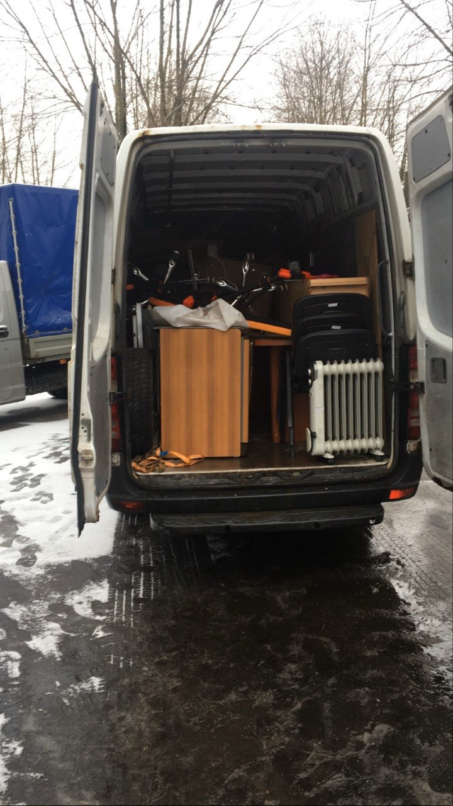
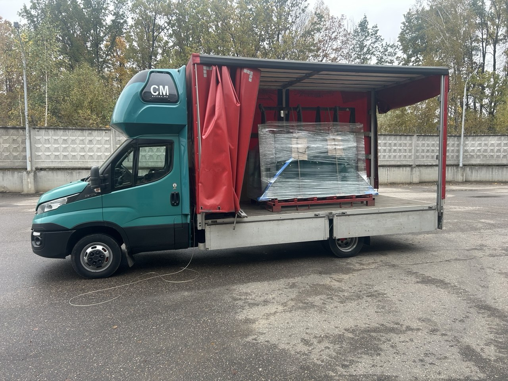
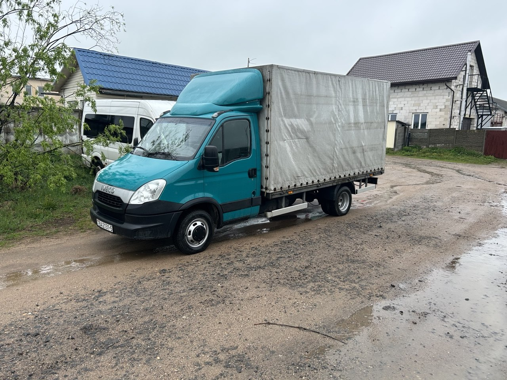
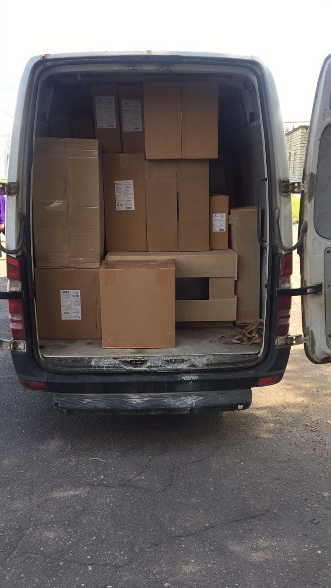
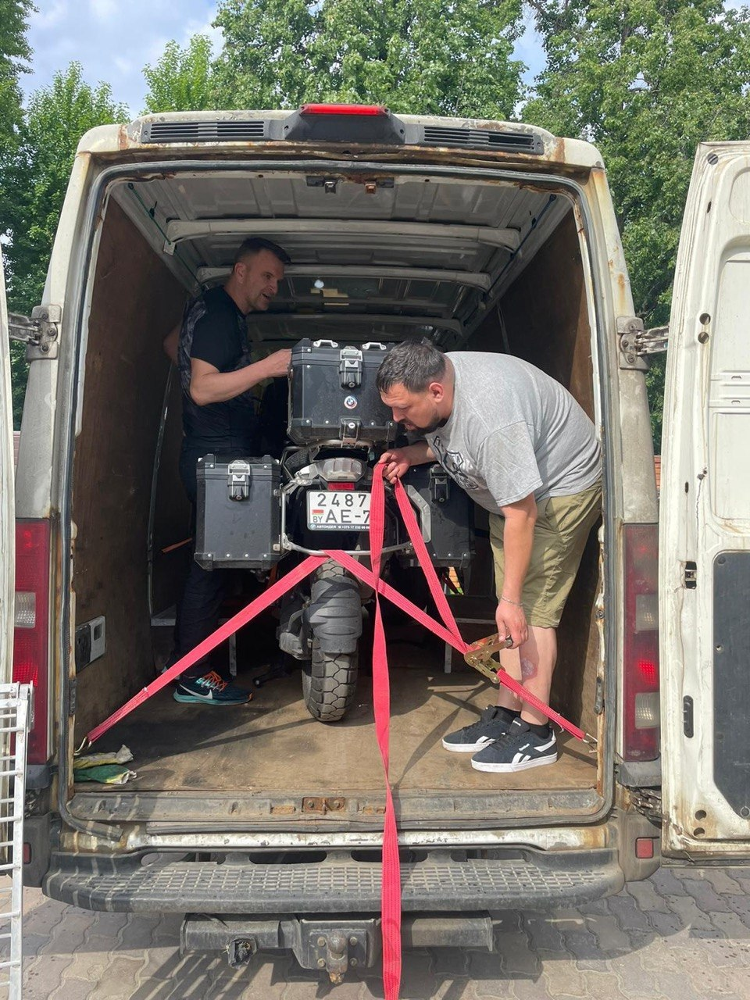

Перевозка грузов Минск – Узда

Перевозка грузов Минск – Узда с компанией Perewozki.by — это надежный способ быстро и безопасно доставить любые грузы. Мы перевозим мебель, бытовую технику, строительные материалы, оборудование и другие грузы, подбираем подходящий автомобиль и выполняем перевозку точно в срок.
Какие грузоперевозки по Беларуси мы предлагаем
- Квартирный, офисный, домашний и дачный переезд
- Доставка стройматериалов, оборудования и покупок
- Перевозка личных вещей между городами
- Перевозка диванов, холодильников, мебели и бытовой техники
- Другие междугородние грузоперевозки
Перевозка грузов Минск – Узда: цена
Интересует стоимость перевозки грузов Минск – Узда? Цена рассчитывается с учетом расстояния, объема, веса груза и выбранного автомобиля. Благодаря собственному автопарку Perewozki.by предлагает выгодные тарифы без посредников. Свяжитесь с нами, и мы быстро рассчитаем стоимость вашей перевозки.
Как с нами работать
- 1Свяжитесь с намиПозвоните, напишите в мессенджер или оставьте заявку — мы перезвоним.
- 2Согласуйте перевозкуПодберём автомобиль, время подачи и заранее назовём стоимость.
- 3Получите услугуВыполним перевозку, после чего вы оплачиваете наличным или безналичным способом.

| Услуга | Стоимость | Примечание |
|---|---|---|
| Грузовые машины до 1,5 тонн | ||
| Грузоперевозки по Минску | от 35 BYN/1 час | Минимальное время заказа – 2 ч. |
| Грузоперевозки за МКАД | от 0,90 BYN/1 км | Возможна скидка – уточнить* |
| Грузовые машины от 1,5 тонн до 2 тонн | ||
| Грузоперевозки по Минску | от 35 BYN/1 час | Минимальное время заказа – 2 ч. |
| Грузоперевозки за МКАД | от 0,90 BYN/1 км | Возможна скидка – уточнить* |
| Грузовые машины от 2 тонн до 3 тонн | ||
| Грузоперевозки по Минску | от 40 BYN/1 час | Минимальное время заказа – 2 ч. |
| Грузоперевозки за МКАД | от 0,95 BYN/1 км | Возможна скидка – уточнить* |
| Грузовые машины от 3 тонн до 5 тонн | ||
| Грузоперевозки по Минску | от 45 BYN/1 час | Минимальное время заказа – 4 ч. |
| Грузоперевозки за МКАД | от 1,3 BYN/1 км | Возможна скидка – уточнить* |
Услуги грузчиков от 10 BYN/часМинимальный заказ 2 часа
* Возможна скидка — уточните стоимость у менеджера.
Перевозка грузов для частных лиц
Перевозка грузов Минск – Узда для частных лиц — это удобная возможность быстро и безопасно перевезти мебель, бытовую технику, личные вещи, строительные материалы и другое имущество. Perewozki.by подберет подходящий автомобиль и организует перевозку с учетом ваших пожеланий.
Перевозка грузов для бизнеса
Перевозка грузов Минск – Узда для бизнеса и юридических лиц — это надежное решение для доставки товаров, оборудования, материалов и коммерческих грузов между городами Беларуси. Perewozki.by предлагает современный транспорт, соблюдение сроков, прозрачные условия сотрудничества и индивидуальный подход к каждому корпоративному клиенту.
Как заказать перевозку грузов
- 1Позвонили
- 2Назвали груз
- 3Получили стоимость
- 4Машина приехала
Наш автопарк и услуги для доставки Минск – Узда
До 1,5 тонн

До 2 тонн

До 3 тонн

До 5 тонн
Преимущества перевозки грузов Минск – Узда и Узда – Минск
Делаем междугородние перевозки удобными по времени, честными по цене и аккуратными по исполнению.
Собственный автопарк грузоподъемностью от 1,5 до 5 тонн
Используем современные грузовые автомобили различной вместимости, что позволяет подобрать транспорт под любой объем груза и выполнить перевозку максимально выгодно.
Опытные водители и профессиональные грузчики
Бережно выполняем погрузку, разгрузку и перевозку мебели, техники, оборудования и других грузов, обеспечивая их сохранность на всем маршруте Минск – Узда.
Прозрачные цены без скрытых платежей
Стоимость перевозки согласовывается заранее и зависит только от маршрута Минск – Узда, объема груза, типа автомобиля и необходимости дополнительных услуг.
Быстрая подача автомобиля
Подбираем ближайший свободный транспорт и организуем подачу автомобиля в среднем за 20–40 минут как в Минске, так и в Узде.
Частные и коммерческие грузоперевозки
Выполняем перевозки для физических лиц, организаций и индивидуальных предпринимателей, предлагая надежные транспортные решения для любых задач.
Перевозка грузов по всей Беларуси
Помимо маршрута Минск – Узда, выполняем междугородние грузоперевозки по всей территории Беларуси, помогая выбрать наиболее удобный маршрут и время отправления.
Удобная связь и быстрое оформление заказа
Принимаем заявки по телефону, а также через Viber, WhatsApp и Telegram. Быстро рассчитываем стоимость перевозки и отвечаем на обращения в кратчайшие сроки.
Работаем ежедневно в удобное для вас время
Организуем перевозки утром, днем, вечером, в выходные и праздничные дни. Подстраиваемся под график клиента и выполняем перевозку грузов по маршруту Минск – Узда в удобное время.
Наличный и безналичный расчет
Предлагаем удобные способы оплаты для физических и юридических лиц, предоставляем необходимые документы и работаем как с разовыми, так и с постоянными клиентами.
Проконсультируем прямо сейчас
Мы онлайн — оставьте заявку или напишите в мессенджер, ответим в течение 20 минут.
Вопросы и ответы о перевозке грузов Минск – Узда
Сколько стоит перевозка грузов Минск – Узда?
Стоимость рассчитывается индивидуально и зависит от расстояния, объема и веса груза, типа автомобиля, а также необходимости услуг грузчиков. Точную цену мы сообщим после уточнения деталей заказа.
Какие грузы вы перевозите по маршруту Минск – Узда?
Мы перевозим мебель, бытовую технику, личные вещи, строительные материалы, оборудование, товары для бизнеса, коммерческие грузы и другое имущество практически любого объема.
Можно ли заказать перевозку в день обращения?
Да. При наличии свободного автомобиля мы можем организовать перевозку в день обращения. Рекомендуем заранее связаться с нами для уточнения времени подачи машины.
Работаете ли вы с физическими и юридическими лицами?
Да. Мы оказываем услуги грузоперевозок как частным клиентам, так и организациям, индивидуальным предпринимателям и государственным учреждениям.
Какие автомобили доступны для перевозки?
В нашем автопарке имеются автомобили грузоподъемностью от 1,5 до 5 тонн. Мы подбираем транспорт с учетом объема, веса и особенностей вашего груза.
Можно ли заказать перевозку с грузчиками?
Да. При необходимости предоставим опытных грузчиков, которые выполнят погрузку, разгрузку, перенос мебели, техники и других тяжелых предметов.
Как быстро подается автомобиль?
В большинстве случаев подача автомобиля занимает от 20 до 40 минут. Время зависит от местонахождения свободной машины и текущей загруженности.
Выполняете ли вы перевозки по всей Беларуси?
Да. Помимо маршрута Минск – Узда, мы выполняем междугородние грузоперевозки между любыми населенными пунктами Беларуси.
Какие способы оплаты доступны?
Мы принимаем наличный и безналичный расчет. Для юридических лиц предоставляем необходимые бухгалтерские документы.
Нужно ли заранее бронировать перевозку?
Желательно оформить заявку заранее, особенно если перевозка планируется в выходные или праздничные дни. Однако мы также принимаем срочные заказы при наличии свободного транспорта.
Несете ли вы ответственность за сохранность груза?
Да. Мы аккуратно выполняем погрузку, надежно фиксируем груз в автомобиле и соблюдаем правила транспортировки, чтобы имущество прибыло в пункт назначения в полной сохранности.
Как оформить заказ на перевозку грузов Минск – Узда?
Свяжитесь с нами по телефону или через Viber, WhatsApp либо Telegram. Мы уточним параметры груза, рассчитаем стоимость, согласуем время подачи автомобиля и подтвердим заказ.
Фотографии перевозки грузов Минск – Узда
Реальные снимки машин, переездов и работы грузчиков Perewozki.by на рейсах между Минском и Уздой.


Заказать перевозку грузов Минск – Узда
Быстро отвечаем, называем стоимость заранее и подаем машину точно ко времени на рейсы между Минском и Уздой.
+375 (29) 701-60-11
- Электронная почта
- perewozki.by@mail.ru
- Время работы
- Ежедневно, без выходных
- География
- Минск, Узда и вся Беларусь

Нужен точный расчёт?Сообщите маршрут и параметры груза.Заказать перевозку